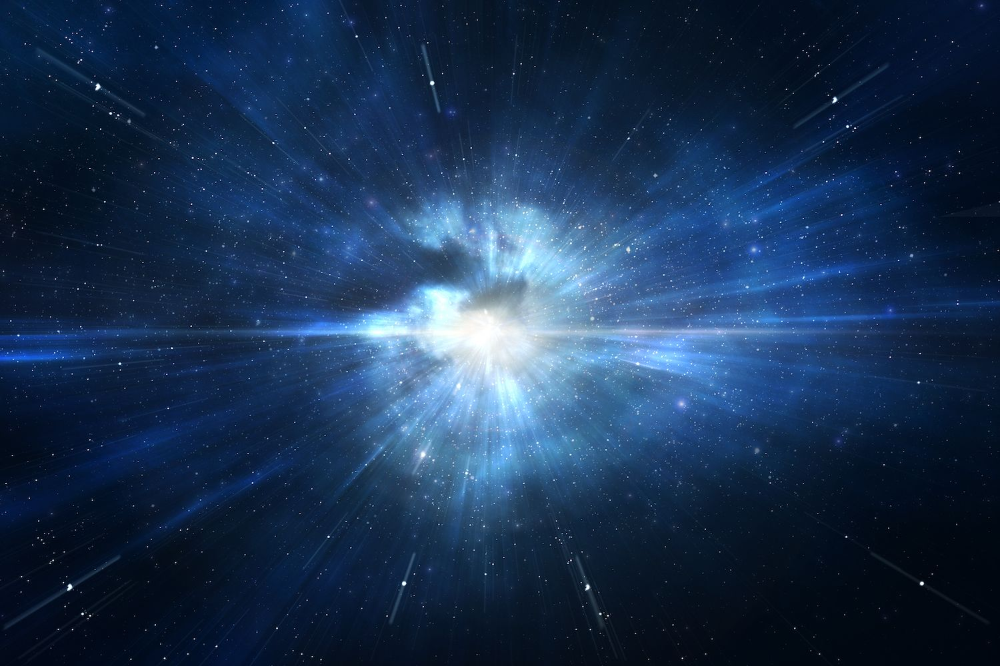

นักวิทยาศาสตร์เชื่อว่าเอกภพไม่ได้มีอยู่ตลอดไป แต่มีจุดเริ่มต้น ทฤษฎีที่ได้รับการยอมรับมากที่สุดในปัจจุบันคือ ทฤษฎีบิกแบง (Big Bang Theory) ซึ่งอธิบายว่าเอกภพเริ่มจากสภาวะที่เล็กมาก หนาแน่นสูงมาก และร้อนจัด ก่อนจะขยายตัวจนเกิดเป็นเอกภพขนาดมหาศาลในปัจจุบัน